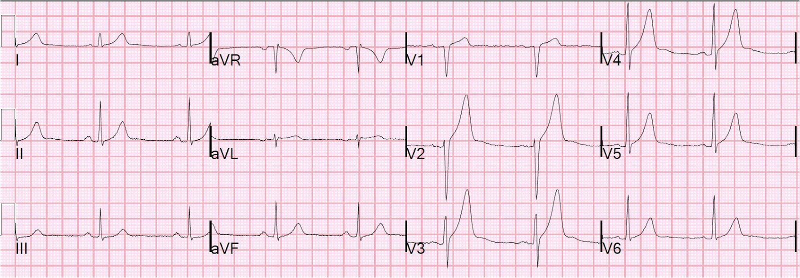
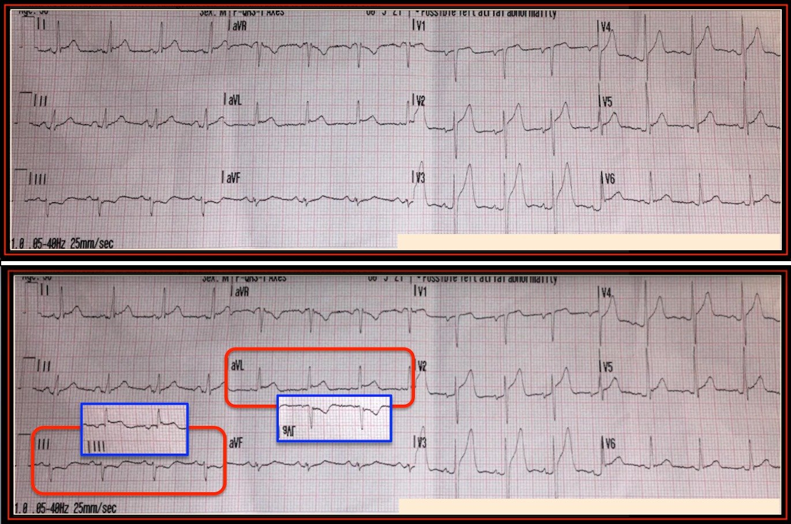

09/08/2018 — Một bệnh nhân 58 tuổi bị yếu mệt và ST chênh lên hơn 4 mm ở V3
Bản dịch tiếng Việt của bài "A 58 year old with Weakness and more than 4 mm ST Elevation in V3" – Dr. Smith’s ECG Blog. Giữ nguyên toàn bộ 5 hình ảnh của bản gốc.
Ca này do Lou B, một nhân viên cấp cứu ngoài viện kiêm điều dưỡng (RN), gửi đến.
Anh ấy viết:
“Chúng tôi được điều đến với một bệnh nhân nam 58 tuổi, làm nghề đưa thư, đã ở ngoài nắng 2-3 giờ. Ông ấy kể suýt ngất, và người xung quanh đã gọi 911. Họ cho ông uống nước pha muối vì ông nghĩ mình bị mất nước.”
“Khi chúng tôi đến, ông tỉnh táo, vã mồ hôi và cảm thấy yếu. Tự đi bộ ra xe cứu thương để được đánh giá.
Phủ nhận đau đầu, đau ngực, buồn nôn / nôn. Không có tiền sử bệnh, không dùng thuốc, không có yếu tố nguy cơ. Chúng tôi đo các dấu hiệu sinh tồn, cho bệnh nhân gắn monitor tim, bao gồm cả ghi điện tâm đồ 12 chuyển đạo.”
Đây là bản ghi:

Bạn nghĩ sao?
Nhân viên cấp cứu kể tiếp:
“Kết quả đọc của LifePak 15 là STEMI. Hình ảnh trông giống tái cực sớm lành tính (BER). Đã truyền điện tâm đồ đến bệnh viện có khả năng PCI.”
“Bác sĩ khoa cấp cứu nói có thể là BER. Khi bệnh nhân đến, bác sĩ tim mạch xem lại và kích hoạt phòng thông tim (cath lab) để thông tim thăm dò.”
“Kết quả thông tim âm tính. Men tim âm tính và vẫn tiếp tục âm tính. Bệnh nhân tự ý xuất viện trái lời khuyên y khoa (AMA) sau thông tim.”
“Liệu có một “giới hạn tuổi trên” mà vượt quá đó thì chúng ta không nên nghĩ đến BER không?”
Phản hồi của tôi:
“Tôi nghĩ hình ảnh này rất đáng lo ngại cho STEMI.”
Nó đạt tiêu chuẩn STEMI ngay cả đối với nam giới dưới 40 tuổi, với ST chênh lên (STE) 2,84 mm ở V2 và 4,08 mm ở V3. Cũng có STE ở I và aVL, kèm ST chênh xuống (STD) soi gương ở chuyển đạo III, vì vậy có vẻ đây là tắc LAD đoạn gần.
Tuy nhiên, ta luôn phải cân nhắc khả năng đây là ST chênh lên biến thể bình thường, đặc biệt khi không có triệu chứng của nhồi máu cơ tim, như trong ca này.
Dưới đây là các đặc điểm bắt buộc phải có nếu bạn muốn diễn giải là STE biến thể bình thường ở V2-V4 (còn gọi là tái cực sớm). Tôi khuyên chỉ dùng công thức phân biệt tắc LAD với tái cực sớm khi các đặc điểm này được thỏa mãn:
Ứng dụng iPhone “subtleSTEMI” sẽ dẫn bạn đi qua từng đặc điểm
https://itunes.apple.com/us/app/subtlestemi/id617146818?mt=8 (ứng dụng subtleSTEMI trên App Store)
Không có chuyển đạo nào có STE tại điểm J lớn hơn 5 mm (xem bên cạnh: V3 có 4,08 mm)
Có hình lõm hướng lên ở tất cả V2-V6
Không có sóng Q
ST chênh xuống ở thành dưới rất ít (tổng ST chênh xuống ở các chuyển đạo dưới nhỏ hơn 1 mm)
Không có sóng T đảo ngược kiểu thiếu máu cục bộ
Không có ST chênh xuống ở chuyển đạo trước tim
Không có biến dạng phần cuối QRS (terminal QRS distortion): Best Explanation of Terminal QRS Distortion in Diagnosis of Electrocardiographically Subtle LAD Occlusion (Giải thích hay nhất về biến dạng phần cuối QRS trong chẩn đoán tắc LAD kín đáo trên điện tâm đồ)
Vì tổng ST chênh xuống ở các chuyển đạo dưới nhỏ hơn 1 mm, điện tâm đồ này đạt các tiêu chuẩn trên, nên nó có thể là tái cực sớm.
Bình luận: Tôi ngần ngại khi dùng công thức này để từ chối kích hoạt phòng thông tim cho những người mà bạn nghĩ là bị STEMI. Tôi khuyến khích dùng nó chủ yếu để khiến bạn xem xét lại chẩn đoán ST chênh lên lành tính khi giá trị công thức cao. Nếu bệnh nhân này có đau ngực và giá trị công thức gợi ý tái cực sớm, tôi sẽ rất ngần ngại hành động dựa trên kết quả đó.
Công thức 4 biến
Nghiên cứu thẩm định công thức 4 biến (hiện đã được xác lập là vượt trội so với công thức 3 biến):
https://onlinelibrary.wiley.com/doi/abs/10.1111/anec.12568 (bài báo thẩm định công thức trên tạp chí Annals of Noninvasive Electrocardiology)
Giải thích về công thức 4 biến:
12 ca sử dụng công thức 3 biến và 4 biến để phân biệt STE bình thường với tắc LAD kín đáo
QTc do máy tính đo là 375 ms
STE60V3 = 6,5 (!)
QRSV2 = 16
RAV4 = 14
Giá trị = 20,24
(Điểm cắt 18,2 là tốt nhất, và giá trị này cao hơn nhiều so với điểm cắt đó, ủng hộ tắc LAD cấp)
Phòng thông tim đã được kích hoạt.
–Các động mạch vành sạch (tuy nhiên đây không phải tiêu chuẩn vàng, vì một số bệnh nhân có ST chênh lên do thiếu máu cục bộ vẫn có thể có động mạch vành sạch).
–Troponin âm tính (đây là bằng chứng rất mạnh chống lại ST chênh lên do thiếu máu cục bộ, nhưng không phải bằng chứng tốt nhất)
–Tất cả các điện tâm đồ ghi sau đó, trước khi chụp mạch vành, đều giống hệt nhau
–Đáng tiếc là chúng tôi không có các điện tâm đồ sau chụp mạch vành [đây mới là tiêu chuẩn vàng — nếu điện tâm đồ không có tiến triển, thì ST chênh lên là tình trạng nền. ST chênh lên do thiếu máu cục bộ luôn luôn tiến triển (STE hồi phục +/- xuất hiện sóng T đảo ngược, +/- xuất hiện sóng Q)].
GIẢI PHẪU MẠCH VÀNH THỰC TẾ:
Ưu thế: Phải
LM (thân chung động mạch vành trái): Mạch máu 5 mm, chia đôi thành LAD và động mạch mũ trái (LCx). Thân chung động mạch vành trái không có bệnh lý
LAD: LAD típ 3, cho ra các nhánh xuyên vách và nhánh chéo như thường lệ. LAD và các nhánh chính của nó không có bệnh lý
LCX: Mạch máu không ưu thế, kích thước trung bình, cho ra vài nhánh bờ tù (OM) và tiếp tục đi hết hành trình trong rãnh nhĩ thất (AV) dưới dạng một mạch nhỏ. LCx và các nhánh chính của nó không có bệnh lý
RCA: Mạch máu ưu thế, cho ra PDA và nhánh sau bên (PLA). RCA và các nhánh chính của nó không có bệnh lý
Lưu ý rằng bác sĩ chụp mạch không chỉ nói là không có bệnh mạch vành gây tắc nghẽn. Họ nói rằng các mạch máu không có bệnh lý. Điều này khiến khả năng nhồi máu cơ tim cấp càng xa vời hơn.
Không có điện tâm đồ sau thông tim, mà nếu không thay đổi thì sẽ khẳng định tuyệt đối đây là điện tâm đồ nền của ông ấy. Tuy nhiên, vì mọi mạch máu đều “không có bệnh lý”, gần như chắc chắn đây là điện tâm đồ nền của bệnh nhân, và đó là một điện tâm đồ đáng sợ.
Điểm cần học:
Một số bệnh nhân có điện tâm đồ nền đáng sợ. Vì vậy, công thức 4 biến quả thật có dương tính giả. Ngay cả khi bạn nghi ngờ tái cực sớm, bạn vẫn có thể cần kích hoạt phòng thông tim, hoặc ít nhất là làm siêu âm tim chính thức cấp cứu có cản âm vi bọt (bubble contrast). Bạn có thể tìm được một điện tâm đồ cũ giống hệt, và điều đó cũng hữu ích.
Đây là một ca tương tự khác với tái cực sớm đáng sợ, mà tôi đã không kích hoạt phòng thông tim.
Tôi đã tránh được điều đó bằng cách nào?
Anterior ST elevation with large broad T-wave: what is the diagnosis? (ST chênh lên thành trước kèm sóng T lớn, đáy rộng: chẩn đoán là gì?)


Bình luận của K. Wang:
Một ca hay.
Điều quan trọng và hữu ích cần lưu ý là
1)
Hơn 90% nam giới trẻ khỏe mạnh bình thường có ST chênh lên đến 3mm ở một hoặc
nhiều chuyển đạo trước tim (Atlas of Electrocardiography của K.
Wang,
(trang 222-224).
2) Có ba
nguyên nhân gây sóng T cao: tăng kali máu, thiếu máu cục bộ tối cấp và biến thể
bình thường (Atlas of Electrocardiography của K. Wang, trang 171).
Hai nguyên nhân đầu cho sóng T đối xứng, nguyên nhân cuối, biến thể bình thường, cho sóng T
không đối xứng, ở chỗ nhánh lên kéo dài hơn nhánh xuống.
Ca này hóa ra có cả hai.
K. Wang.

==================================
BÌNH LUẬN CỦA TÔI, bởi KEN GRAUER, MD (9/8/2018):
===================================
Xin cảm ơn Lou B về ca bệnh sâu sắc này. “BÀI HỌC” của câu chuyện này nhắc tôi nhớ đến bài học quý giá mà tôi được dạy từ lâu về chẩn đoán đau cấp vùng hố chậu phải (RLQ): Nếu bạn tìm thấy viêm ruột thừa cấp trong 90-95% số lần bạn mời hội chẩn ngoại khoa — thì bạn đang không gọi bác sĩ ngoại khoa đủ thường xuyên (tức là bạn đang bỏ sót quá nhiều ca viêm ruột thừa cấp). Điều tương tự cũng đúng với điện tâm đồ ở Hình 1 — câu trả lời đúng (như Dr. Smith đã nhấn mạnh) — là trước những dấu hiệu đáng lo ngại trên bản ghi này, bạn phải loại trừ STEMI cấp cho đến khi chứng minh được điều ngược lại.
- Tôi hoàn toàn không cảm thấy tiếc khi kết quả thông tim hóa ra hoàn toàn bình thường (tức là không có bệnh lý!). Thay vào đó, tôi thấy vừa khiêm tốn vừa rất bổ ích khi biết rằng mặc dù bản ghi 12 chuyển đạo này trông đáng lo ngại — tất cả đều là kết quả của một biến thể tái cực.
Dr. Smith đã trình bày chi tiết một cách chuyên nghiệp các dấu hiệu bất thường trong ca này, bao gồm giá trị công thức 4 biến = 20,24 (trên điểm cắt 18,2). Tôi xin bổ sung các điểm sau từ góc nhìn định tính về cách diễn giải của tôi.
- Chuyển đạo V2 và V3 là những dấu hiệu đầu tiên “đập vào mắt tôi”. Cả hai chuyển đạo đều có mức ST chênh lên tại điểm J nhiều hơn bình thường — và — sóng T trông cao không tương xứng so với phức bộ QRS tương ứng ở 2 chuyển đạo này. Biến thể tái cực có thể rõ ràng tạo ra hình ảnh tương tự — nhưng trách nhiệm thuộc về chúng ta phải chứng minh rằng hình ảnh này là kết quả của một biến thể tái cực, chứ không phải điều ngược lại.
- Chuyển đạo “ưu tiên” của tôi mỗi khi cân nhắc tắc LAD cấp là chuyển đạo aVL. Không có ST chênh lên ở aVL khiến tôi nghi ngờ chẩn đoán tắc LAD cấp. Nhưng có ST chênh lên rõ ở chuyển đạo aVL trong Hình 1.
- Tắc LAD đoạn giữa hoặc đoạn xa hơn không phải lúc nào cũng tạo ra ST-T chênh xuống soi gương ở các chuyển đạo dưới. Nhưng tắc LAD đoạn gần thì hầu như luôn có! Vì vậy, khi đã phát hiện có ST chênh lên ở chuyển đạo aVL — tôi đồng thời nhìn tiếp cả 3 chuyển đạo dưới (II,III,aVF), để xem có thay đổi ST-T soi gương không. Thay đổi soi gương không đồng loạt thấy ở chuyển đạo II — và ngay cả khi có, chúng thường khiêm tốn hơn so với ở chuyển đạo III và aVF. Nhưng tôi đặc biệt tìm hình ảnh “soi gương” kỳ diệu của thay đổi soi gương giữa chuyển đạo III và aVL — mà NẾU có, với tôi nghĩa là STEMI cấp cho đến khi chứng minh được điều ngược lại.
- Để làm rõ ý tôi về thay đổi soi gương “hình soi gương” — tôi đã viền màu XANH ở phần Dưới của Hình 1 hình soi gương của chuyển đạo III và aVL. Lưu ý rằng hình soi gương của ST-T ở chuyển đạo III trông gần như giống hệt hình ảnh thẳng đứng của ST-T ở chuyển đạo aVL — và ngược lại.
- LƯU Ý: Sóng T ở chuyển đạo III và/hoặc chuyển đạo aVF đôi khi có thể đảo ngược bình thường — nhất là khi trục lệch trái, và phức bộ QRS ở các chuyển đạo này chủ yếu âm. Nhưng theo kinh nghiệm của tôi, hiếm khi bình thường lại thấy hình ảnh soi gương (kèm một ít ST chênh xuống) như ta thấy ở chuyển đạo III của Hình 1. Hình dạng ST-T ở chuyển đạo aVF cũng trông không điển hình cho một biến thể bình thường.
Chúng ta còn học được gì từ ca này? Biết rằng kết quả thông tim trong ca này hoàn toàn bình thường — rất đáng để quay lại điện tâm đồ ban đầu ở Hình 1. Các yếu tố chống lại STEMI cấp gồm: i) thực tế là có ít nhất một mức ST chênh lên ở rất nhiều chuyển đạo trên bản ghi này! (tức là chuyển đạo I, II, aVL, và V1 đến V6). STEMI cấp thường khu trú hơn; ii) tăng tiến sóng R tốt và QTc trông tương đối ngắn (đây là 2 đặc điểm định tính được đưa vào các công thức 3 biến và 4 biến của Dr. Smith, mà tôi thấy hữu ích trong việc giảm khả năng STEMI cấp); và iii) người đàn ông 58 tuổi này không bị đau ngực. Dù vậy, những bất thường điện tâm đồ mà chúng ta thực sự thấy trên bản ghi này rõ ràng biện minh cho việc phải loại trừ tắc mạch cấp.
- ĐỀ XUẤT: Vì giờ đây chúng ta biết điện tâm đồ ở Hình 1 là hình ảnh điện tâm đồ “bình thường” của bệnh nhân này — có thể sẽ hữu ích nếu đưa cho ông ấy một bản sao thu nhỏ của điện tâm đồ để mang theo người, phòng khi ông lại đến khoa cấp cứu vì các triệu chứng cấp. Việc có sẵn “bản ghi nền” của ông có thể giúp tránh một lần thông tim khác trong tương lai …

